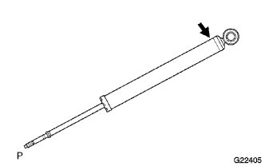

Rear Shock Absorber ASSY LH Opening |
| 1. Shock absorber ASSY RR LH abandoned |
How to eliminate holes
The piston rod is extended and fixed diagonally with a vise.
|  |
Use a gold saw or the like in a place about 3 cm from the welding area at the lower end of the Shirotsuku Sora to drain the gas slowly.